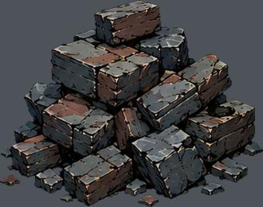
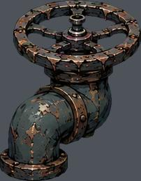
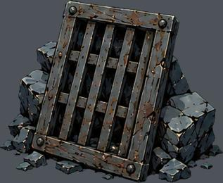
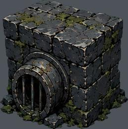
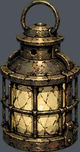
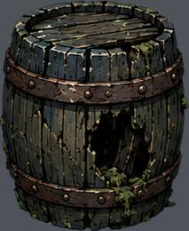
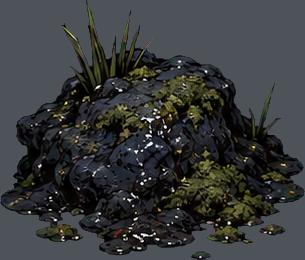
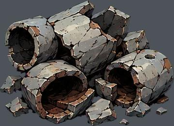
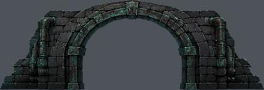

res://assets/biomes/palace/prop-0.png
实例 64；运行画布高度 0.35–1.25 m
尺寸 [361, 284]；透明轮廓 (0, 0, 361, 284)
语义支点、占地、挂点尚需逐图标注下列高度是画布高度，不是实体净高。透明包围盒不等于脚点或占地。

实例 64；运行画布高度 0.35–1.25 m
尺寸 [361, 284]；透明轮廓 (0, 0, 361, 284)
语义支点、占地、挂点尚需逐图标注
实例 74；运行画布高度 0.35–1.23 m
尺寸 [246, 316]；透明轮廓 (0, 0, 246, 316)
语义支点、占地、挂点尚需逐图标注
实例 93；运行画布高度 0.35–2.19 m
尺寸 [372, 305]；透明轮廓 (0, 0, 372, 305)
语义支点、占地、挂点尚需逐图标注
实例 84；运行画布高度 0.36–6.00 m
尺寸 [307, 309]；透明轮廓 (0, 1, 306, 309)
语义支点、占地、挂点尚需逐图标注
实例 12；运行画布高度 0.37–1.09 m
尺寸 [176, 334]；透明轮廓 (0, 0, 176, 334)
语义支点、占地、挂点尚需逐图标注
实例 62；运行画布高度 0.40–1.25 m
尺寸 [234, 286]；透明轮廓 (0, 1, 233, 286)
语义支点、占地、挂点尚需逐图标注实例 78；运行画布高度 0.35–1.24 m
尺寸 [347, 300]；透明轮廓 (1, 1, 347, 300)
语义支点、占地、挂点尚需逐图标注
实例 237；运行画布高度 0.11–1.25 m
尺寸 [305, 260]；透明轮廓 (0, 0, 304, 260)
语义支点、占地、挂点尚需逐图标注
实例 98；运行画布高度 0.35–1.23 m
尺寸 [369, 267]；透明轮廓 (0, 1, 368, 266)
语义支点、占地、挂点尚需逐图标注
实例 39；运行画布高度 11.94–18.95 m
尺寸 [991, 340]；透明轮廓 (0, 0, 991, 340)
语义支点、占地、挂点尚需逐图标注